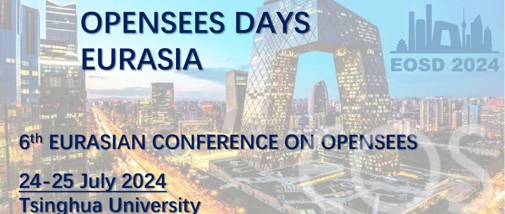

第六届OpenSees会议顺利召开

7月24-25日 OpenSees 会议

会议会场影像

清华大学潘鹏教授主持开幕式

EOS委员会Giorgio Monti教授主持大会报告

英国Bristol大学Anastasios Sextos教授大会报告

美国加州大学戴维斯分校Sashi Kunnath教授线上大会报告

东南大学徐赵东教授大会报告

意大利都灵理工大学Giuseppe Marano教授大会报告

意大利“G. D'Annunzio” in Chieti-Pescara大学Guido Camata教授大会报告

香港理工大学Liming Jiang助理教授大会报告

清华大学陆新征教授主持大会报告
✦
•
✦


✦
部分分会场影像
（向右滑动查看更多）
✦
✦
•
✦


✦
部分分会场影像
（向右滑动查看更多）
✦


OpenSees培训课程影像
会议简介
★ OpenSees（Open System for Earthquake Engineering Simulation）是由太平洋地震工程中心（PEER）创建的一个面向对象的开源软件框架，主要用于模拟结构和岩土系统在地震作用下的响应。OpenSees已被广泛应用于相关研究和实际工程中。
★ 自2006年以来，OpenSees Days在世界各地定期开展活动，包括美国加州UC伯克利的OpenSees Days 2012、意大利萨莱尔诺大学举办的OpenSees Days 2015、葡萄牙波尔图大学举办的欧洲OpenSees Days 2017、香港理工大学举办的欧亚OpenSees Days 2019，意大利都灵理工大学举办欧亚OpenSees Days 2022。2024年，欧亚OpenSees Days 2024在中国北京举办。
★ 会议主要包括地震工程及其相关延伸领域的研究主题，如结构健康监测（SHM）、结构的参数化设计、岩土工程抗震以及土-结构相互作用研究等。会议旨在帮助不同领域的研究人员交流OpenSees使用和开发经验，共同促进有关OpenSees的前沿研究和思想碰撞。

2024 OpenSees Days
重要时间节点
全文提交(可选)：2024年10月1日
论文全文提交截止日期为2024年10月1日，被接收的论文将发表在Lecture Notes in Civil Engineering (Springer) ，并索引于Elsevier SCOPUS。
2024 OpenSees Days
学术委员会
Giorgio Monti, Filip Filippou, Frank McKenna, Fabio Di Trapani , Giuseppe Quaranta, Enrico Spacone, José Miguel Castro, Xavier Romão, Asif Usmani, Humberto Varum, Joel Conte, Kazuhiko Kasai, Cristoforo Demartino, Christos Zeris, Dimitrios Lignos, Fabrizio Mollaioli, Massimo Petracca, Liming Jiang, Lizhong Jiang, Zhongguo Guan, Rui Wang, Longhe Xu, Zhaodong Xu.
2024 OpenSees Days
组委会
Xinzheng Lu, Fabio Di Trapani, Cristoforo Demartino, Giorgio Monti, Antonio Sberna, Linlin Xie, Kaiqi Lin, Yuan Tian, Donglian Gu, Yongjia Xu, Bin Wang.
2024 OpenSees Days
会务组联系方式
官方网站：
https://openseesdays2024.civil.tsinghua.edu.cn/
End